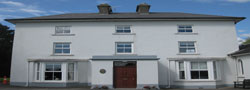
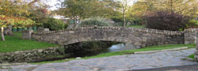
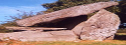

Welcome to Templeorum Parish Co. Kilkenny
Owning - Teampall Uaithne
Owning was completed in 1798. As with Templeorum it replaced a thatched chapel built in c. early to middle 1700s. Like Templeorum it was built by means of tenant farmer monetary subscription in accordance with their means and local voluntary labour.

Owning House Co. Kilkenny
Click Here For More InformationOwning
The only people paid were the qualified contracted stone masons and carpenters. In design it is cruciform; in the shape of the Cross of Christ. As with all churches it has undergone renovations down the years. Initially it had two entrance doors instead of the one we see today. Attached to its sacristy, like Templeorum, was the living quarters of the curate. It was not until the post Famine, 1850 and onwards that individual houses a distance from the church were built for curates. Owning has both pew seating in the nave and three galleries overhead, one housing the choir and organ. Pews were bought by individual parishioner family subscription at its time of construction and the families who subscribed sat in their own pew for Sunday and Holyday Masses.
×Piltown
As a rural agricultural economy, the district had no rich merchants like that of the city of Waterford and elsewhere to provide substantial sums towards the building of churches. This is why the church at Piltown was nine years in completion from 1889 to 1899. It was opened for worship in September 1899.
Stony Bridge Piltown
Click Here For More Information
Piltown
Again local parishioners based on their means and donations helped fund the purchase of stain glass windows, marble altar and pews. Many renovations have been effected down the years. In the 1920s the ornate mural behind the main altar and the frescoes behind the former baptismal area at back of church was completed. As with the Templeorum and Owning, Piltown is dedicated to the Blesssed Virgin under the title of Assumption. Piltown is the largest church of the three, catering for the highest density of population of the three areas which comprise the parish of Templeorum. In architectural influence it is largely Gothic, a Gothic revival style and displays a confident Roman Catholic population in the last year of the 19 th century when farmer tenants were in the process of rising out from under the yoke of landlordism and Home Rule was still in prospect. Of its time, Piltown is one of the finest churches in the diocese of Ossory.
×Templeorum
It was built between 1810-1814. Though located in the part of the parish with the lowest population density, it is the official Parish Church of the Catholic parish of Templeorum, as was its thatched predecessor built in 1720, and from which the present parish derived its name.

Leac an Scáil Harristown
Click Here For More InformationTempleorum or Teampall Odhráin
Previous to 1720 the geographical entity known as the parish of Templeorum was referred to as Fiddown or Owning and Templeorum. In church design Templeorum is a barn type structure as distinct from the more common cruciform type common to its period of construction. As a rural parish church it is regarded as finest in the diocese of Ossory and one of the finest in the country. Aspects of its interior are modelled on the Catholic Cathedral on Barronstrand Street, in Waterford city. Namely the fine plaster pillars lining each side of the nave and the Romanesque ornamentation of the pillars upholding the back gallery and choir, visible as you enter the church. The Lacy brothers worked as contractors on both churches, hence the resemblance, as they took their inspiration from the Cathedral in Waterford .
×